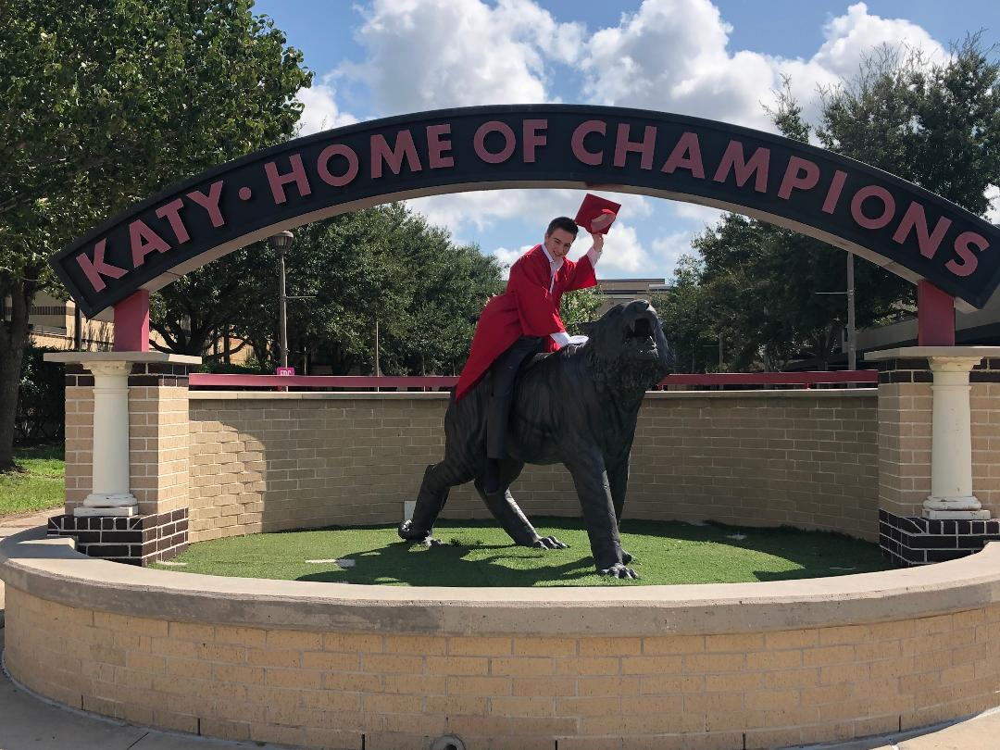
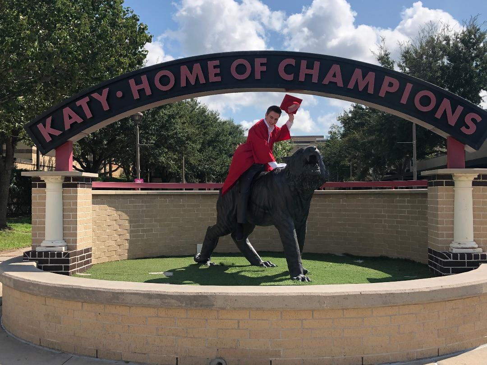
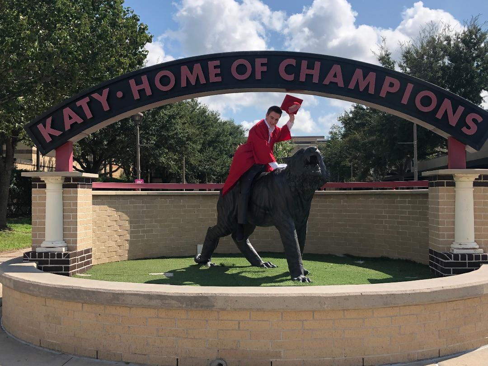
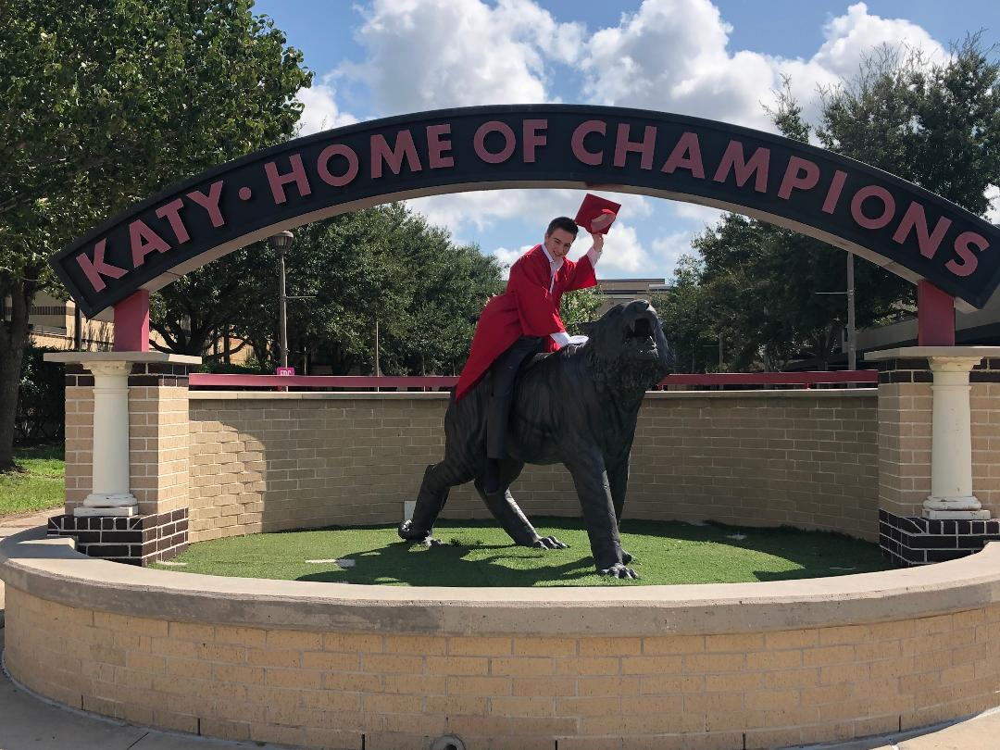

I am a computer science major at the University of Houston with a GPA of 3.73. I graduated Katy High School with a GPA of 4.0. I did wrestling and high school and was a varsity wrestler on the KHS wrestling team. I learned programming mostly on my own, so I am mostly self taught. I enjoy learning a lot and I want to get better at something every day. Some things I do in my free time are gaming, going to the gym, skateboarding, and hanging out with my friends. I also program for fun, but mainly if I'm not too busy with school, work, and my personal life. I also have a dog named Litsa, and she is my child. My family saved her from being euthanized because she was so skinny as a puppy. Now she is a cornerstone in my family.